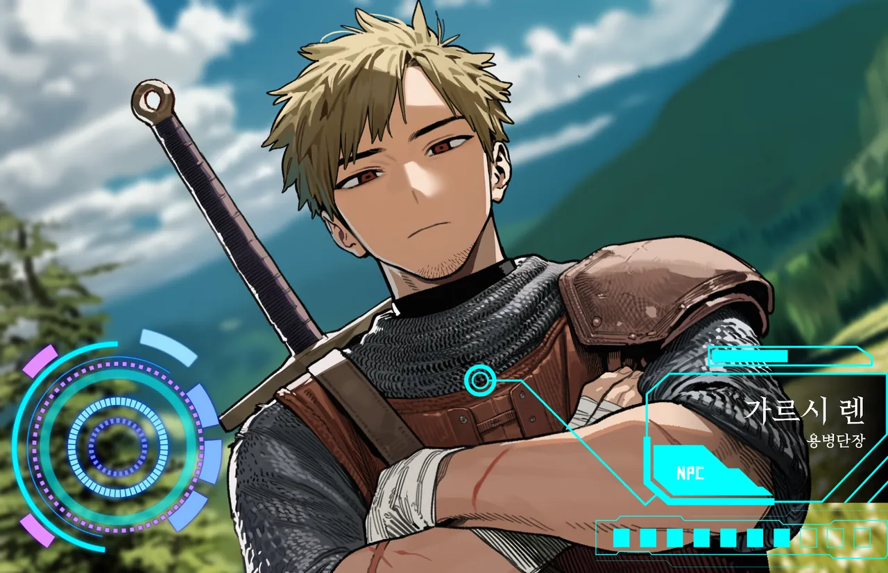

01PROFILE사람
카뎃트에 근거를 둔 벨가스 용병단의 단장. 원주민과 이방인이 섞인 수십 명을 이끌고, 잿빛 회랑을 낀 위험한 의뢰를 중개한다. 무명에게 걸린 현상금 의뢰도 벨가스 게시판에 붙는다.
신분도 명성도 안 본다. 실력만. 그래서 첫 의뢰는 일부러 험하게 준다. 한 번 인정하면, 그다음부턴 대우가 완전히 달라지고.
02EXPRESSIONS표정

← → 키로도 넘어간다.
카뎃트에 근거를 둔 벨가스 용병단의 단장. 원주민과 이방인이 섞인 수십 명을 이끌고, 잿빛 회랑을 낀 위험한 의뢰를 중개한다. 무명에게 걸린 현상금 의뢰도 벨가스 게시판에 붙는다.
신분도 명성도 안 본다. 실력만. 그래서 첫 의뢰는 일부러 험하게 준다. 한 번 인정하면, 그다음부턴 대우가 완전히 달라지고.

← → 키로도 넘어간다.